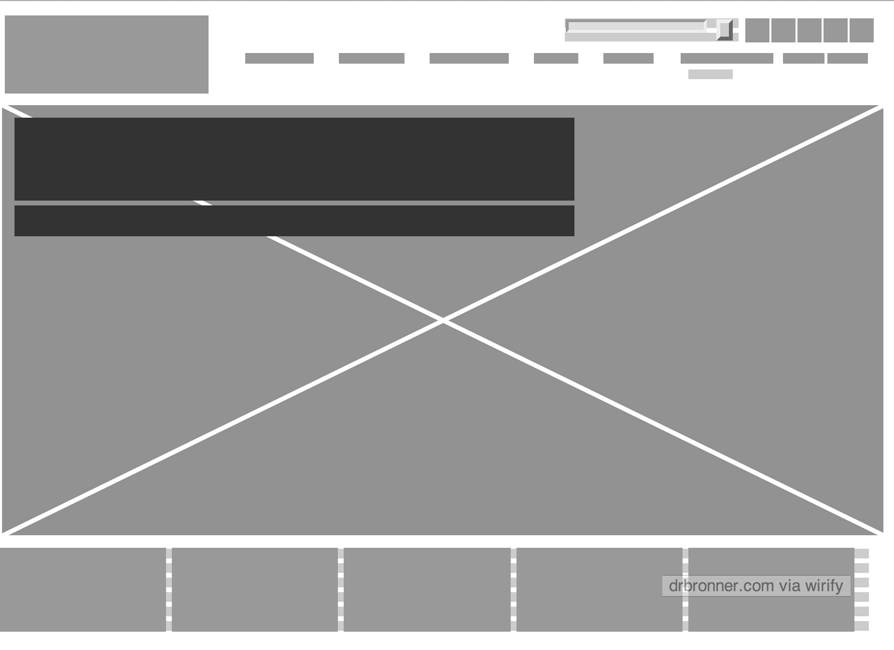

Wireframing three favorite sites
April 24, 2014
drbronners.com
The website is geared toward commerce. The problem that the homepage is solving is providing a means for consumers to purchase its product. It also has a strong secondary purpose, to educate and inform consumers around its business practices and company philosophies. I believe one of its visual challenges is to convey excitement and interest around what is basically just soap. This is achieved through a colorful and impactful image in its main content area that is surrounded by what is otherwise a clean white environment.
Website Screenshot

Wireframe Screenshot
